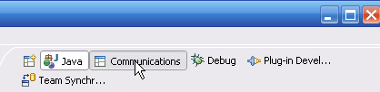
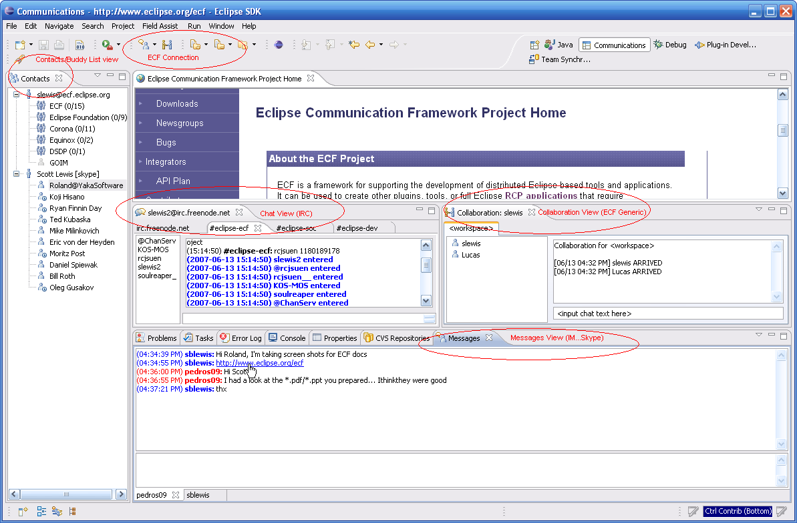
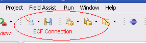

Eclipse Communication Framework (ECF)Eclipse Communication Framework (ECF)
Eclipse Communication Framework (ECF)Eclipse Communication Framework (ECF)Upon installation of both the ECF 'Core' feature and the ECF 'Application' feature, ECF creates a new perspective for the workspace called 'Communications'. To access this perspective, click on the 'Communications' button in the upper right of the workspace:
Then you will be presented with the Communications Perspective:
Your initial exposure to the Communications Perspective will not have active connections, and it will be necessary to create connections to the desire communications services via the toolbar widgets
If you like, you can add these widgets to other perspectives (i.e. the Java, Debug, Plug-in Development, Resource, Team Synchronizing, and/or other perspectives). This is done by showing the desired perspective, and selecting from the menu:
Then the ECF Connection widgets will appear in the toolbar of the given perspective.
ECF Project Home Page: http://www.eclipse.org/ecf
ECF Extras Home Page (Skype, JMS, and Yahoo providers): http://ecf1.osuosl.org/ecf
ECF Wiki: http://wiki.eclipse.org/index.php/Eclipse_Communication_Framework_Project
New and Noteworthy: http://www.eclipse.org/ecf/NewAndNoteworthy.html
ECF Project Home Page: http://www.eclipse.org/ecf
ECF Extras Home Page (Skype, JMS, and Yahoo providers): http://ecf1.osuosl.org/ecf
ECF Wiki: http://wiki.eclipse.org/index.php/Eclipse_Communication_Framework_Project
New and Noteworthy: http://www.eclipse.org/ecf/NewAndNoteworthy.html
API Documentation: http://wiki.eclipse.org/index.php/ECF_API_Docs